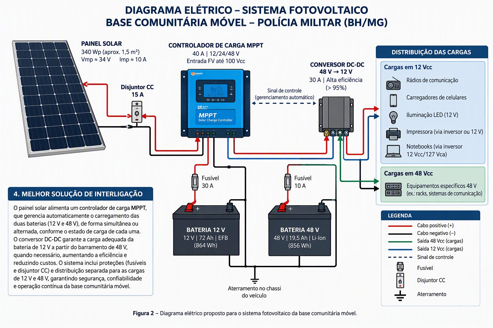

Desenhos do projeto


Projeto do circuito elétrico da base comunitária móvel da PMMG: um painel solar de cerca de 1,5 m², bateria EFB de 12 V e bateria Li-Ion de 48 V, operando das 14h às 00h em qualquer região de Minas Gerais.
A tabela de equipamentos veio sem potências, então foram adotados valores típicos. Troque pelos valores de placa e refaça o balanço da seção 2.
| Condição | Valor adotado |
|---|---|
| Local | Todo o estado de Minas Gerais, latitude ≈ 14° S a 23° S. Placa horizontal no teto, quase ótima de outubro a março; no inverno rende menos que uma placa inclinada. |
| Janela de operação | 14h–00h (10 h). Sol útil até ≈ 17h20 (inverno) a ≈ 18h30 (verão); depois, só bateria. |
| Pré-condição | Veículo estacionado ao sol antes das 14h, com baterias carregadas pela manhã e início da tarde. |
| Painel | ≈ 1,5 m² com eficiência de 20 a 22,5 %, ou seja, 300 a 340 Wp. |
| Temperatura | Células a 65–70 °C causam perda de ≈ 14–17 % de potência (calor do Norte de Minas e do Vale do Jequitinhonha). Mínimas de 0 a 5 °C no Sul de Minas e nas serras, no inverno. |
| Limites das baterias | EFB 12 V: 55 °C. Li-Ion 48 V: 58 °C. |
| Reserva de partida | Preservar a EFB para dar partida no motor (descarga máxima ≈ 30 %). |
Foram escolhidas cargas em 12 V CC sempre que possível, para evitar perdas de inversor.
| Carga | Potência média | Tempo | Energia |
|---|---|---|---|
| 2 notebooks (CA) | 2 × 22 W | 10 h | 440 Wh |
| Tomadas e carregadores de rádio (CA) | 15 W | 10 h | 150 Wh |
| Frigobar compressor 12 V, pré-resfriado | 12 W | 10 h | 120 Wh |
| Ventilador 12 V BLDC com termostato | 10 W | 6 h | 60 Wh |
| 6 câmeras 12 V | 6 × 3 W | 10 h | 180 Wh |
| NVR | 10 W | 10 h | 100 Wh |
| TV 12 V | 15 W | 4 h | 60 Wh |
| Modem e roteador | 8 W | 10 h | 80 Wh |
| Cargas CA (590 Wh), inversor de 90 % | ≈ 655 Wh | ||
| Cargas CC (600 Wh), conversor de 95 % | ≈ 632 Wh | ||
| Total | ≈ 1,29 kWh |
A geração diária depende da região e da época (rendimento do sistema de 0,78; valores aproximados). Confirme a insolação do município no Atlas Brasileiro de Energia Solar ou no SunData/CRESESB.
| Cenário | Sol pleno equivalente | 300 Wp | 340 Wp |
|---|---|---|---|
| Pior mês (inverno ou chuvas) | 4,5 h/dia | 1,05 kWh | 1,19 kWh |
| Média anual | 5,2 h/dia | 1,22 kWh | 1,38 kWh |
| Melhor condição (Norte de Minas, seca) | 5,8 h/dia | 1,36 kWh | 1,54 kWh |
Li-Ion 856 Wh × 80 % ≈ 685 Wh, mais EFB 864 Wh × 30 % ≈ 260 Wh. Total ≈ 945 Wh.
≈ 0,3 a 0,45 kWh, conforme a época do ano.
Em vez de dois controladores independentes, a proposta usa um único estágio MPPT e um conversor em cascata.
Voc 22,5 V · Vmp 18,6 V
Imp 8,1 A · Isc 8,6 A
Voc 45 V (≈ 49 V a −5 °C)
Vmp 37 V (≈ 31 V a 70 °C, ≈ 30 V a 75 °C no Norte de Minas)
Controlador tipo LM5176 ou LT8390, fsw = 100 kHz.
| Item | Especificação |
|---|---|
| Corrente de entrada de projeto | 9,5 A |
| Pior caso em boost | Vin = 30,8 V, Vout = 49,2 V, D = 0,374 |
| Indutor | L = Vin·D / (fsw·ΔI) = 30,8 × 0,374 / (10⁵ × 2,85) ≈ 40 µH → 47 µH, Isat ≥ 15 A, DCR ≤ 8 mΩ |
| MOSFETs | 4 × 100 V, Rds(on) ≤ 10 mΩ |
| Capacitores | Entrada 2 × 100 µF/63 V + cerâmico; saída 100 µF/100 V + cerâmico |
| Eficiência esperada | 96–98 % |
| Item | Especificação |
|---|---|
| Razão cíclica | D ≈ 0,29 |
| Indutor | L = (48 − 13,8) × 0,288 / (10⁵ × 6 A) ≈ 16 µH → 22 µH, Isat ≥ 28 A |
| Saída | 2 × 220 µF/25 V low-ESR |
| MOSFETs | 80–100 V, ≤ 5 mΩ, corrente máxima 25 A, limite programado em 20 A |
| Opção de menor custo | Módulo comercial 48 → 12 V CC/CV de 25–30 A, ajustável |
48 V → 127 V senoidal pura, 500 VA, eficiência ≥ 92 %, consumo em vazio ≤ 5 W com modo eco.
| Ponto | Proteção |
|---|---|
| Painel → MPPT | Fusível 15 A DC (mín. 60 V), cabo solar 4 mm² |
| Saída do MPPT | Fusível 15 A |
| Entrada do buck | Fusível 15 A |
| Inversor | Fusível 25 A, cabo 4–6 mm² |
| Barramento 12 V | Fusível 30 A, cabo 6 mm² |
| Geral | Seccionadora DC, DPS DC 60 V, queda de tensão < 2 % |
Lógica automática, executada pelo microcontrolador.
Rádios, modem e roteador, NVR e câmeras.
Notebooks e tomadas.
TV, ventilador e frigobar.
O circuito é o mesmo em todo o estado; muda o que mais pesa em cada região. Avaliação qualitativa, a confirmar no município de operação.
| Região | Condição típica | Ajuste |
|---|---|---|
| Norte de Minas e Vale do Jequitinhonha | Mais sol e calor (células ≈ 75 °C), poeira na seca | Priorizar o vão ventilado e o derating térmico; limpar o painel a cada 2–4 semanas na seca |
| Triângulo Mineiro e Alto Paranaíba | Sol forte, chuvas de verão (nov–mar) | Módulo de 340 Wp; modo ECO em dias nublados seguidos |
| Central, Zona da Mata e Leste | Intermediária, com nebulosidade no verão | Dimensionamento de referência deste documento |
| Sul de Minas e Mantiqueira | Frio e geada no inverno, mais nebulosidade | Inibir carga da Li-Ion abaixo de 0 °C; conferir Voc a frio (≈ 49 V); prever apoio do alternador no inverno |
| Alternativa | Custo | Eficiência | Observação |
|---|---|---|---|
| PWM + relés | Menor | Baixa (perde 20–30 %) | Inviável para a Li-Ion, pois Vpv < Vbat |
| 2 MPPTs comerciais | Maior (≈ R$ 2–3 mil a mais) | Alta | Painel dividido, mais complexo |
| Proposta (MPPT 4 chaves + buck) | Intermediário | Alta (≈ 93–97 %) | Melhor custo-benefício |
| Item | Faixa (R$) |
|---|---|
| Módulos solares 300–340 Wp | 700–1.100 |
| Estrutura com vão ventilado | 200–300 |
| MPPT buck-boost 350 W | 350–600 |
| Buck 48 → 13,8 V | 200–400 |
| Inversor 48 V 500 VA | 500–900 |
| MCU, sensores e display | 150–250 |
| Proteções, cabos e conectores | 300–450 |
| Total (sem trocar os equipamentos) | ≈ 2.400 a 4.000 |
Trocar frigobar, ventilador e TV por versões CC é um custo à parte (o frigobar 12 V costuma ser o mais caro). O ganho é de ≈ 0,3 kWh/dia, o que evitaria painel e bateria extras.

1,5 m², 2 módulos em série, 300–340 Wp (preferir ≥ 21,5 % de eficiência).
MPPT buck-boost 4 chaves, barramento de 48 V, buck 48 → 13,8 V e inversor para as tomadas.
Simultânea por prioridade (EFB primeiro, excedente para a Li-Ion), com perfis CC/CV próprios.
≈ 93–97 % no conjunto, com cargas CC nativas e painel ventilado.
Um só estágio MPPT e conversores simples, a partir de ≈ R$ 2,4 mil.
55 °C e 58 °C com derating, correntes de recarga muito abaixo do limite, reserva de partida, SELV e o clima de todo o estado.